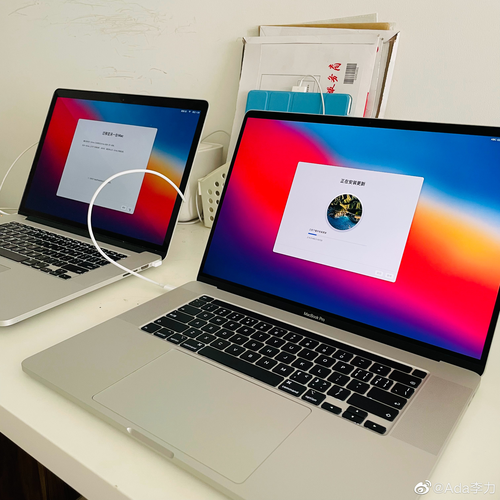

#一个人的企业#
一直用着的电脑，因为电池鼓包，找了上门换电池服务，480元，以为解决了问题开始还很高兴，结果发现电池无法充电，换了三次还是同样问题。
打了苹果客服电话，用重新设置的方式也无法解决，于是还得预约苹果旗舰店的线下服务。而到了那里才知道，因为电池被第三方换过，所以不能享受优惠价格，电池加主板更换的话，要收2800元。
只好买新电脑了。
想了想第三方服务跟苹果官方的价格差异巨大的原因。第三方的上门换电池服务快捷又迅速，但对问题原因一问三不知，只是态度很好，不行就换，连续给换了三回，最后实在解决不了你的问题，就退款。
而我打苹果官方技术服务热线，只要有产品序列号，即使7年前的电脑，也能得到非常好而且及时的技术服务。而预约旗舰店的线下服务，在我见到专家之前，经过了三个苹果店员的确认。而所有这些服务都是有成本的。
还有其它的解决方案，比如从深圳网购电池自己更换，或者在北京找专门的维修店。但这些解决方案，一旦加上自己要花费的时间以及中间的闹心过程，就相地的不划算。
花钱买服务，其实要的就是个舒心。我以前不把自己的时间或者满意度，当做很重要的事情时，就总是觉得别人的服务贵。如果会算账的话，和专业服务收费相比，你自己瞎折腾才真叫贵。
一直用着的电脑，因为电池鼓包，找了上门换电池服务，480元，以为解决了问题开始还很高兴，结果发现电池无法充电，换了三次还是同样问题。
打了苹果客服电话，用重新设置的方式也无法解决，于是还得预约苹果旗舰店的线下服务。而到了那里才知道，因为电池被第三方换过，所以不能享受优惠价格，电池加主板更换的话，要收2800元。
只好买新电脑了。
想了想第三方服务跟苹果官方的价格差异巨大的原因。第三方的上门换电池服务快捷又迅速，但对问题原因一问三不知，只是态度很好，不行就换，连续给换了三回，最后实在解决不了你的问题，就退款。
而我打苹果官方技术服务热线，只要有产品序列号，即使7年前的电脑，也能得到非常好而且及时的技术服务。而预约旗舰店的线下服务，在我见到专家之前，经过了三个苹果店员的确认。而所有这些服务都是有成本的。
还有其它的解决方案，比如从深圳网购电池自己更换，或者在北京找专门的维修店。但这些解决方案，一旦加上自己要花费的时间以及中间的闹心过程，就相地的不划算。
花钱买服务，其实要的就是个舒心。我以前不把自己的时间或者满意度，当做很重要的事情时，就总是觉得别人的服务贵。如果会算账的话，和专业服务收费相比，你自己瞎折腾才真叫贵。
- 